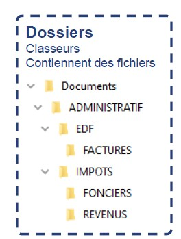
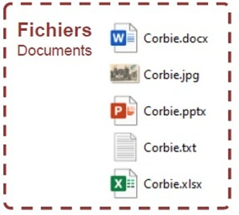
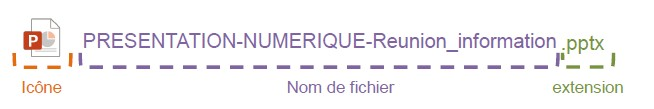

Rappel
Dossiers = Emplacements numériques dans lesquels nous organiserons nos fichiers
Fichiers = Documents numériques (texte, image, vidéo, musique, tableau, page web…)


Dossiers = Emplacements numériques dans lesquels nous organiserons nos fichiers
Fichiers = Documents numériques (texte, image, vidéo, musique, tableau, page web…)



Icône (propre au logiciel servant à ouvrir le fichier) Plusieurs logiciels peuvent ouvrir les fichiers.
Nom (au choix) Il est préférable de donner un nom distinctif pour une meilleure organisation.
Extension (propre au type de document) Souvent masquée pour éviter les mauvaises manipulations.